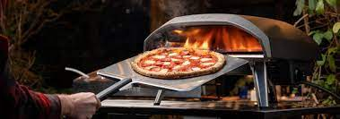

Baking the Pizza in an Ooni Oven

Using the pizza peel, the chef places the prepared pizza into the Ooni oven.
Rotating 90 degrees every 15 seconds, the pizza crust and cheese should start darkening to chef's liking.
Ingredients
Steps
- Scrape remaining ash off of the Ooni baking stone
- Turn oven to the highest temperature setting for at least 15-20 minutes to allow the stone to get sufficiently hot
- Generously flour the surface of your pizza peel (You can use cornmeal or semolina flour instead)
- On a floured working surface, press down onto ball of dough to form a large disc. Lift the dough from the edges while rotating the disc, enabling gravity to gently stretch the dough evenly (avoid using a rolling pin)
- Once desired size is reached, quickly lay the dough on top of your floured pizza peel and assemble pizza
- Lower oven temperature to lowest setting (only when pizza is in the oven)
- Slide pizza in the oven with one swift motion a few inches away from the flames
- Before you slide your pizza into the oven, lift the edge of the dough closest to you and blow air under it (this helps lift the dough off the peel and avoid sticking)
- Every 10-15 seconds, slide your peel under the pizza, pull it out, and turn it about 1/4 of the way around.
- If the edges are getting overly burned, place the pizza further from the flames. If the pizza looks undercooked, move it closer to the flames or increase the heat slightly
- Once cooked to chef's liking, pull pizza out of Ooni and let cool to serve
Back to Homepage